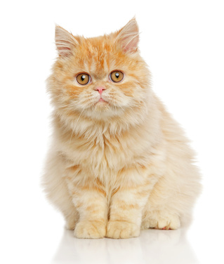
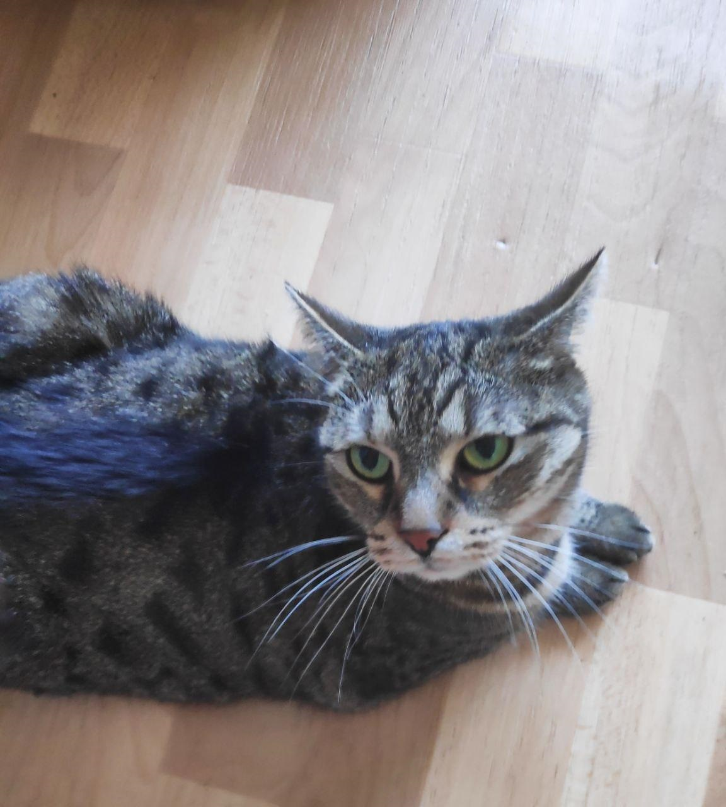

Kočka domácí
Kočka domácí je roztomilou domestikovanou formou kočky divoké. Ale nenechte se tím zmást, jsou to podlí tvorové, kteří neznají
slitování. Ale i přesto je lidé chovají doma jako mazlíčky. Všechny kočky jsou si alespoň částečně podobné, mají krátké končetiny,
jsou průměrně 30cm vysoké a s ocasem dlouhé 80cm.
Kočky by měly dostávat potravu v průběhu dne a ne jenom 2x denně. Měli by dostávat kočičí žrádlo: granule, kapsičky, atd,
protože lidská strava jim nesvědčí, jelikož je pro kočku buď moc slaná nebo tučná. také je dobré najít si jednu značku vydavatelů
a u ní zůstat.
- Siamská kočka
- Jsou vysoce inteligentní a společenské krátkosrsté plemeno. Jsou schopné naučit se aportovat, chodit na vodítku, atd.
- Barmská kočka
- Středně velké svalnaté kočky, které jou velmi aktivní a společenské. Mají krátkou srst. A jsou často zaměňovány za siamky.
- Ragdoll
- Je to největší domácí kočka na světě a zaroveň také jediná kočka, které nevadí, když je náhle zvednuta ze země a přenesena.
- Bengálská kočka
- Tyto kočky jsou velmi inteligentní, přitom mírné a klidné, mají pevné zdraví a jsou vytrvalé.
- Britská krátkosrstá kočka
- Jsou soběstačné a aktivní, zárověň jsou velmi oddané svému majiteli, považují jej za svou rodinu a všude za ním chodí.
- Evropská kočka
- Jsou nenáročné a přizpůsobivé a také si rády hrají nebo odpočívají. Dožívají se často velmi vysokého věku, bezmála klidně i 18 let.
- Perská kočka
- Jsou velmi klidné a tiché, dokážou žít v klidu i v bytě, ovšem jsou také dobrými lovci. Mají dlouhou srst a kulatou hlavu.

- Mainská mývalí kočka
- Jsou velmi velké a robustní, avšak velmi hravé a kamarádské, Jejich hravost vydrží celý život a s ostatními zvířaty se velmi dobře snáší.
- Egyptská kočka mau
- Jsou typické svým tečkovaným zbarvením, vznikla přirozeně. Egyptská mau je aktivní kočka, která si ráda hodně hraje.
- Kartouzská kočka
- Je to středně velká svalnatá kočka s lesklou na omak jemnou srstí. Jsou skvělými kamarády pro děti, protože jen zřídkakdy vytahují drápky.
- Somálská kočka
- Srst somálské kočky je polodlouhá, společensky jsou natom jako Siamky, rozdíl je v tom, že Somálky na sebe upozorňují méně nápadně.
- Sibiřská kočka
- Tato kočka vzhledem nejvíce připomíná rysa. Jsou komunikativní a společenské a celkově skvělí kamarádi, někdy je označována za kočkopsa.
- Japonský bobtail
- Je to krátkoocasé plemeno s nesmírně přítulnou a milou povahou. Ocs tohoto plemena je hu%natý tudíž vypadá jako bambulka
- Čížek
- Toto je má vlastní kočka, je typická svou mourovatostí, sice se může jevit jako andílek, ale například už jen při pokusu o tuto fotku mě poškrábal.
